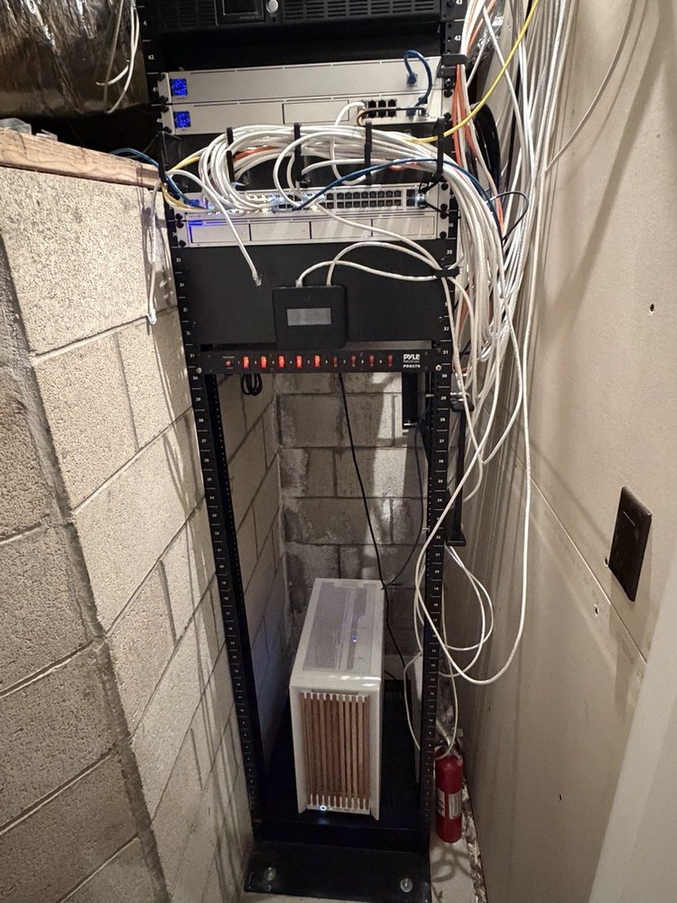

Workstation build
Eureka
My workstation, from the workbench to the server rack.
Parts list
- CPU
- AMD Ryzen 9 7900X
- GPU
- ASUS ROG Strix GeForce RTX 3090 OC, 24 GBROG-STRIX-RTX3090-O24G-GAMING
- Motherboard
- MSI MAG B650 Tomahawk WiFi
- Memory
- G.Skill Trident Z5 RGB, 32 GB (2 × 16 GB), DDR5-6000 CL36F5-6000J3636F16GA2-TZ5RK
- Storage
- Samsung 990 PRO 4 TB NVMe SSDMZ-V9P4T0B/AM
- Power supply
- Seasonic FOCUS GX-1000, 1000 W, 80 PLUS GoldSSR-1000FX
- CPU cooler
- Thermalright Phantom Spirit 120 SE ARGB
- Case
- Corsair FRAME 4000D WOOD RS, White & Oak
